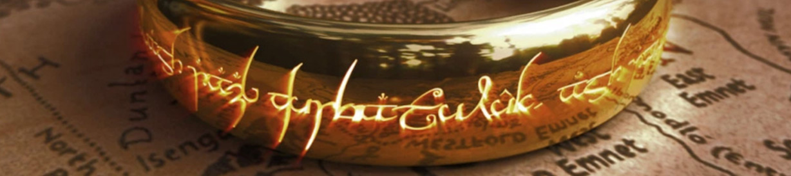

The Lord of the Rings is an epic[1] high fantasy novel[a] by the English author and scholar J. R. R. Tolkien. Set in Middle-earth, the world at some distant time in the past, the story began as a sequel to Tolkien's 1937 children's book The Hobbit, but eventually developed into a much larger work. Written in stages between 1937 and 1949, The Lord of the Rings is one of the best-selling books ever written, with over 150 million copies sold.[2]
The title names the story's main antagonist, the Dark Lord Sauron, who had in an earlier age created the One Ring to rule the other Rings of Power as the ultimate weapon in his campaign to conquer and rule all of Middle-earth. From homely beginnings in the Shire, a hobbit land reminiscent of the English countryside, the story ranges across Middle-earth, following the quest mainly through the eyes of the hobbits Frodo, Sam, Merry and Pippin.
Although generally known to readers as a trilogy, the work was initially intended by Tolkien to be one volume of a two-volume set along with The Silmarillion, but this idea was dismissed by his publisher.[3][T 2] For economic reasons, The Lord of the Rings was published in three volumes over the course of a year from 29 July 1954 to 20 October 1955.[3][4] The three volumes were titled The Fellowship of the Ring, The Two Towers and The Return of the King. Structurally, the work is divided internally into six books, two per volume, with several appendices of background material at the end. Some editions print the entire work into a single volume, following the author's original intent.
Tolkien's work, after an initially mixed reception by the literary establishment, has been the subject of extensive analysis of its themes and origins. Influences on this earlier work, and on the story of The Lord of the Rings, include philology, mythology, religion, earlier fantasy works, and his own experiences in the First World War. The Lord of the Rings in its turn has had a great effect on modern fantasy.
The Lord of the Rings has since been reprinted many times and translated into at least 38 languages.[b] The enduring popularity of The Lord of the Rings has led to numerous references in popular culture, the founding of many societies by fans of Tolkien's works,[5] and the publication of many books about Tolkien and his works. It has inspired numerous derivative works including artwork, music, films and television, video games, board games, and subsequent literature. Award-winning adaptations of The Lord of the Rings have been made for radio, theatre, and film. It has been named Britain's best novel of all time in the BBC's The Big Read.
The source of this article is Wikipedia